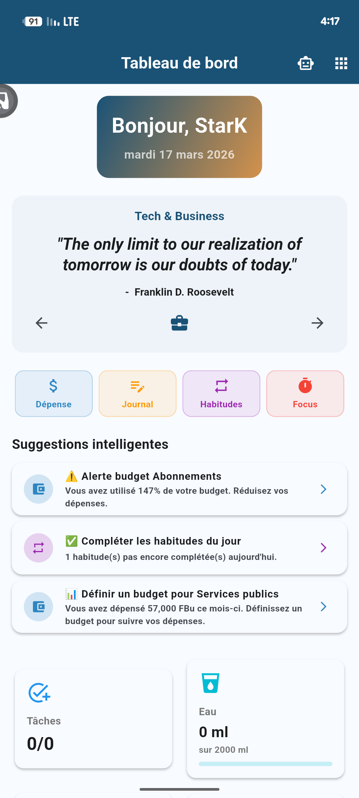

About
I am passionate about creating innovative solutions that enhance user experiences and meet specific client needs. My journey has allowed me to develop a versatile approach, combining creativity with advanced programming techniques.

AI Engineer | Software Architect | Founder, Ijwi ry'Ikirundi AI
My mission is advancing digital sovereignty for Africa's underserved languages, starting with Kirundi, spoken by 12M+ people yet invisible to AI. That's why I founded Ijwi ry'Ikirundi AI and built the first open-source AI data infrastructure for Kirundi: 4,500+ sentences and growing, designed for linguistic inclusion in the AI era. With years of experience, I design production systems that work within Africa's realities: offline-first, zero-cost, community-driven. By day, as an AI Developer & Software Engineer at Asyst, I bridge cutting-edge AI with scalable production backends and multi-agent workflows.
- Website: My Website
- City: Bujumbura, BURUNDI
- Languages:
- Degree: Bachelor
- Email: Junior_julescesar10@hotmail.com
- Freelance: Available
Before tech, I spent 20+ months in Emergency Medicine rotations. That's where I learned to think in systems and make decisions under pressure. It shaped how I build software today: reliability first, always plan for failure, and never assume perfect conditions.
Impact
Measurable milestones from my engineering and open-source work.
Dataset Sentences
Shipped Projects
Open-Source Repos
Dataset Downloads
GitHub Activity
Skills
Organized by core competencies: from autonomous intelligence to enterprise-grade infrastructure.
AI & Intelligence
Systems & Backend
Ops & Leadership
Resume
From Full-Stack Development to AI Architecture to founding Ijwi ry'Ikirundi AI, my journey is defined by building systems that solve real-world problems at scale, with a focus on low-resource language preservation and production-grade AI.
Summary
Jules Cesar Junior Ndayisenga
AI Engineer & Production Architect with years of experience. Founder of Ijwi ry'Ikirundi AI. Building AI infrastructure for African markets, from low-resource language preservation to offline-first production systems serving local businesses.
- Bujumbura, Burundi
- +257 77 568 903
- Junior_julescesar10@hotmail.com
Education
Bachelor in Software Engineering
2022 - 2025
Lake Tanganyika University, Campus Kigobe, Bujumbura
Focusing on Software Architecture, Distributed Systems, and Advanced Database Management.
Diploma in Nursing
2017 - 2021
Ecole Paramedicale de Gitega, Gitega
Graduated with Distinction. Gained critical thinking and crisis management skills through 20+ months of intensive clinical rotations in Emergency and Internal Medicine departments.
Specialized Training & Technical Deep-Dives
Agentic AI Engineering
2025
Complete Technical Intensive — 6 Weeks, 5 Frameworks
Architected complex Multi-Agent Systems and autonomous decision loops using OpenAI Agents SDK, CrewAI, LangGraph, AutoGen, and MCP.
- Built Dev Swarm: A multi-agent coding system with Dockerized sandboxed execution (learning project).
- Engineered Autonomous SDR: A self-healing sales agent that manages email threads and state.
- Developed AI Ops Manager: An internal tool coordinating workflows inside Jupyter Notebooks.
- Capstone Project: Simulated Autonomous Trading Floor with 4 AI trader agents, 44+ MCP tool integrations, knowledge graph memory, and real-time Gradio monitoring dashboard.
AI Engineer Bootcamp 2025
2025
Advanced Curriculum: Deep Learning & NLP
Mastered high-level NLP (Tokenization, Transformers), Vector Search (Pinecone, RAG pipelines), and Speech Processing (Whisper integration).
Embedded Systems
2023
TME Education
Earned a certificate in Embedded Systems, bridging software logic with hardware constraints.
Leadership Training
2022
Africa Youth Leadership Forum
Earned a certificate focused on team management, strategic vision, and community building.
Professional Experience
Founder & Technical Lead
Nov 2025 - Present
Ijwi ry'Ikirundi AI | Remote
- Architected a full-stack data pipeline for low-resource language acquisition using Python, Hugging Face, and Git LFS.
- Designed a zero-cost serverless contribution platform using GitHub Pages and Google Apps Script (GAS) as a backend API.
- Managing a dataset of 4,500+ sentences and audio clips, implementing automated cleaning scripts (Pandas/RegEx) and CI/CD workflows.
- Leading a community of open-source contributors to preserve the Kirundi language for the AI era.
AI Developer & Software Engineer
Feb 2025 - Present
Asyst Resources LTD | Bujumbura
- Working on AI initiatives, architecting intelligent solutions using
- Designing REST APIs and microservices for scalable backend infrastructure.
- Building advanced chatbots and AI assistants that integrate LLMs with backend systems for real-time conversational experiences.
- Developing AI-powered tools including interview simulators and intelligent automation systems.
Software Engineer (Full Stack)
2022 - 2024
Freelance / Various Clients
- Developed robust web applications including Secure Chat Systems and Productivity Tools.
- Election Management System: Architected a database solution for managing voter registers and election logbooks, improving data accuracy for local teams.
- Enterprise Invoicing: Created custom invoicing software ("Facturer") to streamline billing processes for local businesses.
- Developed and published browser extensions Chrome/Firefox Addon for productivity and task management.
Medical Staff (A2 Nurse)
2017 - 2021
Various Local Hospitals, Burundi
- Developed high-pressure decision-making skills in Emergency and Surgery departments.
- Managed patient care workflows, proving reliability and attention to detail in critical environments.
Projects
Production systems, open-source infrastructure, and applied AI. Explore my engineering work below.
- All
- AI Ops
- Engineering
- Mobile
 Flagship
Active
Flagship
Active
Ijwi ry'Ikirundi AI Ecosystem
Problem: No AI-ready datasets exist for Kirundi, a language spoken by 12M+ people.
Architecture: Python ETL pipeline, Hugging Face Hub, zero-cost contribution platform via GitHub Pages + Google Apps Script.
Outcome: 4,500+ sentences collected, open-source, community-driven.
 Revenue
Active
Revenue
Active
E-Sama: Boutique & POS Management
Problem: Local businesses in Burundi lack affordable digital inventory and sales tools.
Architecture: Flutter cross-platform app with offline-first local storage, no server dependency, and real-time analytics.
Outcome: In production with 16+ paying users and growing. Handles inventory, invoicing, and sales analytics for local businesses.

Samandari Tasky
Problem: Developers need lightweight task management inside the browser.
Architecture: Chrome/Firefox extension using browser storage APIs and custom UI.
Outcome: Published on Chrome Web Store and Firefox Add-ons with 4+ installs.

Revenue ActiveVelora: Productivity & Wellness
Problem: Existing productivity apps are either too complex, require internet, or lack monetization for indie developers.
Architecture: Flutter offline-first app with Hive, custom device-tied license activation, GitHub Gist remote admin, and Google Drive backup.
Outcome: Paid app with active subscribers. Habits, goals, smart alarms, journal, and admin panel for client management.

Kirundi Contribution Platform
Problem: Contributors need a frictionless way to submit Kirundi sentences and audio.
Architecture: Serverless app with GitHub Pages frontend, Google Apps Script backend, zero hosting cost.
Outcome: Live contribution platform powering the Kirundi AI dataset growth.


{kind=link}
{kind=link}
{kind=link}
{kind=link}
{kind=link}
{kind=link}
{kind=link}
Services
Specialized engineering to bridge the gap between raw LLM logic and production-ready enterprise systems.
AI Ops & Agents
Architecting multi-agent swarms and autonomous decision loops using CrewAI and OpenAI SDK.
Core Engineering
Building production-grade RAG pipelines and scalable backends that ensure data integrity and low-latency retrieval for enterprise AI.
Mobile Solutions
Developing cross-platform productivity hubs and AI-integrated mobile experiences with Flutter.
Sama Apps MarketplaceThinking
Short essays on AI architecture, African tech infrastructure, and the future of intelligent systems.
Testimonials

Arsene IRUMVA
Software Engineer
Stark architected a critical microservices backend that cut our API response times significantly. His ability to decompose complex problems into clean, scalable modules made him the go-to person for our most technically challenging features.

Brunel Neree
Graphic Designer
Over 3 years of collaboration, Stark consistently delivered polished, pixel-perfect interfaces from my designs. His frontend precision and attention to visual detail made every handoff seamless, a truly reliable engineering partner.

Aldo Alex NGANJI
Web Developer
During our university capstone, Stark debugged a critical database concurrency issue that had blocked the entire team for days. His systematic approach to problem-solving and his organizational skills kept our project on track when deadlines were tight. Working with him is always a rewarding experience.

Lioba
Software Engineer
Stark integrated an AI-powered search feature into our project that none of us thought was feasible within our timeline. He handled the full pipeline, from vector embeddings to REST API, and shipped it ahead of schedule. His contributions were instrumental in the success of our projects.

Fernet
Mobile Developer
Stark built the entire offline-sync engine for our Flutter app when connectivity was unreliable. His persistence in solving edge cases around data conflicts was remarkable. The feature became the most praised part of the product by our users.

Bazagod
Web Developer
Stark mentored me through building my first full-stack project from scratch, from database schema design to deploying on a live server. His patient, hands-on guidance in both frontend and backend fundamentals accelerated my growth as a developer more than any course could.